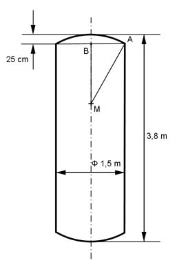

Aufgabe 385 Auf einen Zylinder mit einem Durchmesser von 1,5 m sind beidseitig 25 cm hohe Kugelkappen angeschweißt. Der so entstandene Kessel hat eine Gesamtlänge von 3,8 m. Wie groß ist seine Oberfläche O?  Zylinderhöhe hZylinder: 3,8 m = 380 cm hZylinder = 380 cm - 2 *25 cm = 330 cm Satz von Pythagoras im Dreieck MAB: 1,5 m = 150 cm MA = r MB = r - 25 cm AB = 150 cm/2 = 75 cm MA² = MB² + AB² |-AB² r² = (r - 25)² + 75² cm² r² = r² - 50 * r + 625 + 5 625 cm² | - r² 0 = - 50 * r + 6 250 + 50 * r 50 * r = 6 250 | :50 r = 125 cm Oberfläche 0 = Zylindermantelfläche M + 2 * Fläche Kugelkappe K rZylinder = 150 cm/2 = 75 cm O = 2 * л * rZylinder * hZylinder + 2 * 2 * л * r * hKappe O = 2 * л * 75 * 330 + 2 * 2 * л * 125 * 25 cm² O = 155 430 cm² + 39 250 cm² = 194 680 cm² = 19,5 m²